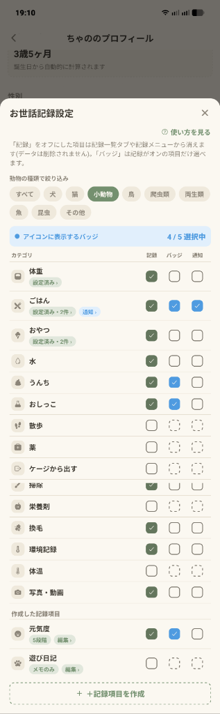

Q. 「記録」のチェックを外すと、これまで記録したデータは消えますか？
いいえ、データは削除されません。ホームの記録ボタンや「記録を見る」タブから隠れるだけなので、まずは体重とごはんだけオンにして後から増やす使い方も安心です。
「お世話記録設定」は、ペットのプロフィール画面の下部にある「お世話記録設定」行をタップすると開きます。ペットの種類に合わせて使う項目だけを選び、さらに自分だけのオリジナル記録項目を追加できます。

上部のチップ（すべて / 犬 / 猫 / 小動物 / 鳥 / 爬虫類 / 両生類 / 魚 / 昆虫 / その他）で、その動物に関係するお世話項目だけに絞り込めます（開いたときはプロフィールの分類が自動で選ばれます）。
右上の「? 使い方を見る」をタップすると、5枚の図解カードで設定のポイントをいつでも見直せます。
・記録（緑のチェック）：オンにした項目だけ、ホーム画面の記録ボタンと「記録を見る」タブの項目チップに表示されます。
・バッジ（青のチェック・最大5個）：今日の記録回数をホーム画面のペットアイコンの周りに表示します（青いバーに「4 / 5 選択中」のように現在の選択数が出ます）。
・通知（青のチェック）：曜日と時刻を指定して、記録がない日に届くお世話通知を設定します（設定済みの行には「通知 ›」バッジが出ます）。
・体重・体温：初めて「記録」をオンにすると適正範囲（下限〜上限）の入力画面が開きます。設定後は行の「設定済み ›」バッジからいつでも変更できます。
・ごはん・おやつ・薬：よく使うフード名やおやつ・薬を登録しておくと、日々の記録画面で選ぶだけで入力できます。「ほかのペットの登録から選ぶ」で別のペットの登録名をコピーすることも可能です。
一覧の一番下にある「＋記録項目を作成」を押すと、自分だけの記録項目を作って一覧の1行に追加できます。
記録の種類は「あり／なし」「数値（単位つき）」「5段階（例：元気度）」「メモのみ（例：遊び日記）」の4種類から選べ、アイコンも自由に設定できます。作成した項目の「編集 ›」バッジから名前・アイコン・単位の変更や削除が行えます。
いいえ、データは削除されません。ホームの記録ボタンや「記録を見る」タブから隠れるだけなので、まずは体重とごはんだけオンにして後から増やす使い方も安心です。
「バッジ」と「通知」は、左側の「記録」がオンになっている項目だけ選べる仕組みです。先に「記録」にチェックを入れると選べるようになります。
はい。作成した項目自体はすべてのペットのお世話記録設定に並び、使うかどうか（記録・バッジ・通知のON/OFF）をペットごとに選べます。
はい。通知の設定ポップアップにある「ほかのペットのセットから追加」を選ぶと、既存の通知セットにそのペットを追加して共有できます。